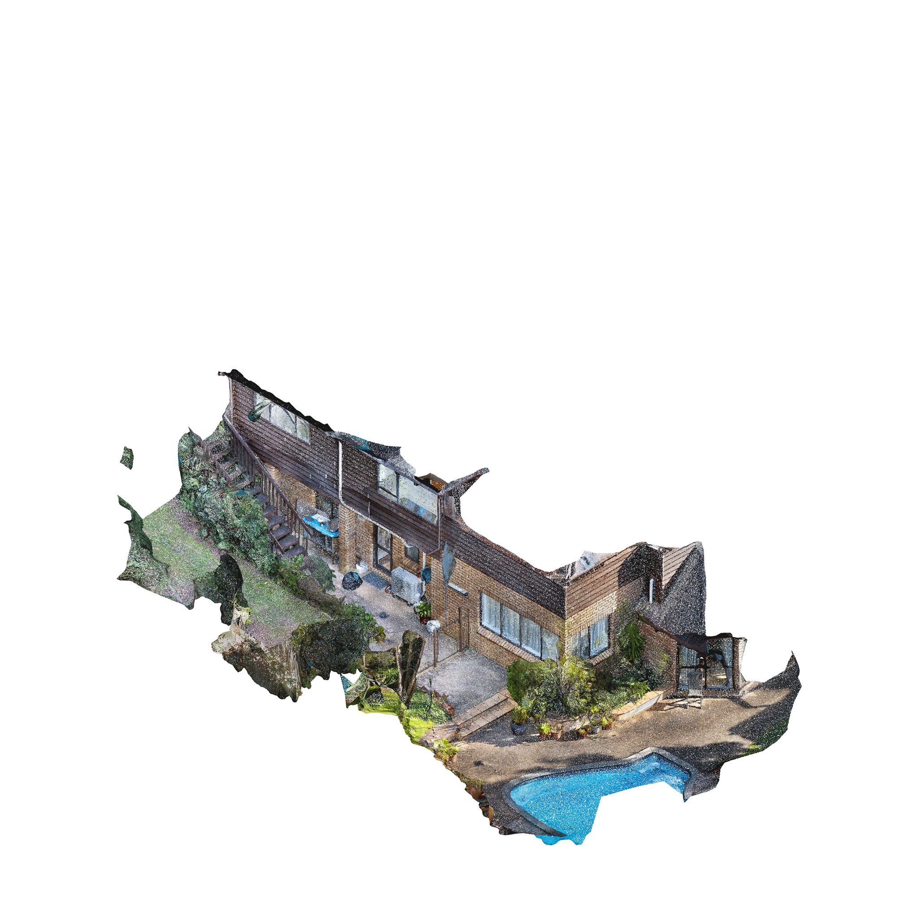

|  |
|
In 2026, scaffolding was erected to repair some cracked roof tiles. The scaffolding gave us access to flat parts of
the roof that wasn’t previously possible. We climbed up to watch the sunset. The scaffold stayed up until the
following year, when we decided to install a trapdoor and new raised roof tiles to allow permanent access to this space.
A washing line spans between the house and the fence. In 2029, it fell. We used a rope and a couple of concrete blocks to make a temporary line. That worked well, so we formalised it the next year into a retractable line and added a couple of extras from second floor windows. We found that drying large blankets or duvets created more intimate spaces within the larger garden. Blankets became large sheets, before we installed curtains that could rise and drop depending on the occasion. A gap in the fence and some extra washing machines made this space into a communal laundry for the newly subdivided property next door. |